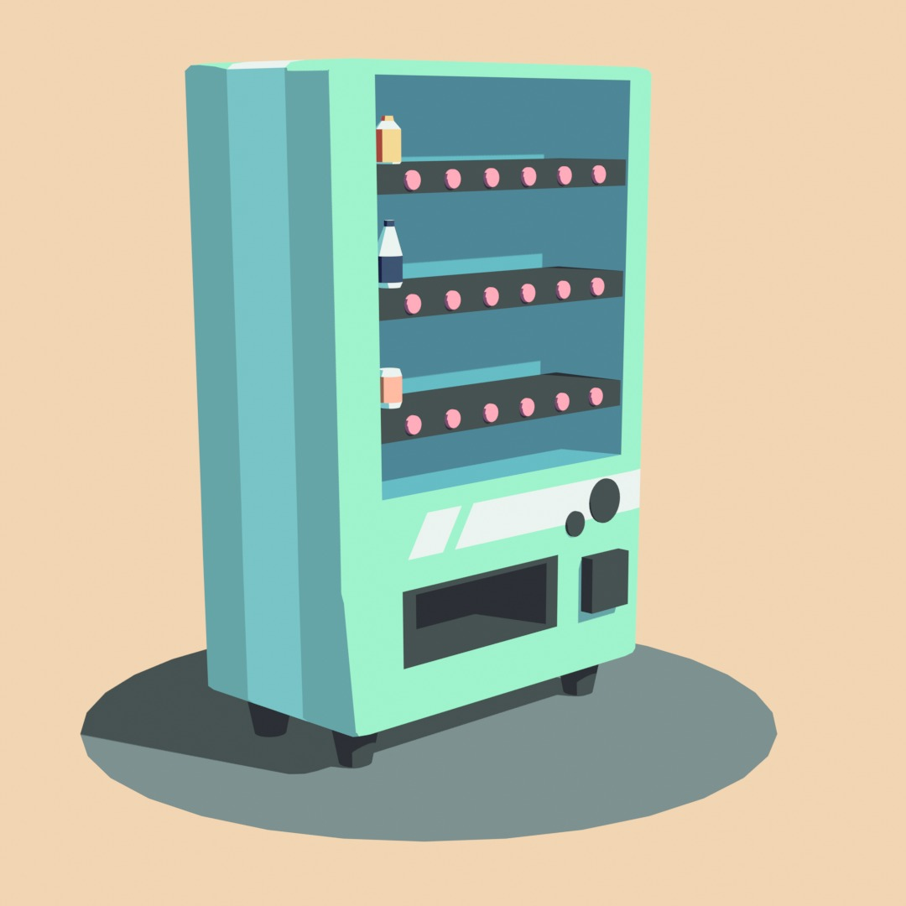

Welcome
I'm Jintana,
A graduate student in Creative Technology at the University of Twente. My studies have given me a strong foundation in both
the technical and creative sides of design. With hands-on experience in hardware and software,
I'm equipped to tackle a variety of challenges and come up with innovative solutions.
I'm passionate about blending creativity with technology to create impactful designs.
I'm interested in ...
UX/UI designer, Product development and Project manager.
Bringing innovative and creative ideas is my passion.
Always testing to identify problems and drive improvement.
Keeping the user's needs in mind when creating products
Experience
Data Intern at Publitas
Mar - May 2024
Co founder in a start up called Dreamcooker
Oct - Jan 2023
Restaurants
Aug 2018 - June 2022
With experience in a wide range of design disciplines, from 3D modeling to data analysis,
my work is driven by a passion for creativity and innovation. Below are some highlights of my key skills and expertise.

Project Highlights
3D Design
I specialize in creating immersive 3D models, environments, and interactive elements for game design, product prototyping, and architectural visualization. My primary expertise lies in Blender, where I excel in crafting detailed and high-quality visuals tailored to each project's needs. While Blender is my main tool, I also have experience with SketchUp and Maya for specific tasks and Fusion 360 for product design, which has broadened my adaptability across different design tools and enhanced my ability to learn new technologies.





Design process
I’m skilled in the full design lifecycle, from ideation to prototyping and testing. Using user-centered design principles and frameworks like MoSCoW and SMART goals, I ensure products are functional and visually appealing. I use Figma for creating wireframes, mockups, and interactive prototypes, delivering seamless user experiences for mobile apps and websites.

Game
I design engaging board games, 2D games, and 3D digital environments, focusing on immersive gameplay and interactive experiences. My work includes a board game prototype, 2D games built in GameMaker Studio2, and 3D games developed in Unity. I use game design principles to enhance mechanics and ensure a structured, creative experience for players.


Prototyping
Prototyping is key to my design process, enabling rapid testing and refinement through iterative development. I have hands-on experience with 3D printing, laser cutting, and crafting prototypes like LED lamps. For dynamic, interactive prototypes, I use Arduino to create functional, movable designs, ensuring quick and efficient concept realization for real-world testing.